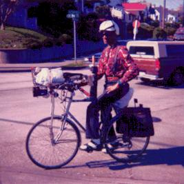
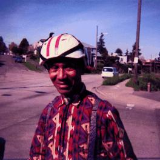
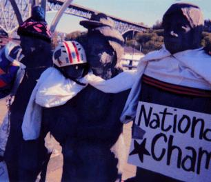

I had seen Lewis's bike parked a few times in downtown Seattle, and even if I had been in a hurry, I would still have stopped and looked at it. It's got an amazing rack up in the front, made out of a barbecue grill, some struts and rails, and lots of hose clamps. There's a flashlight lashed to it, and a bunch of bungees holding down some bags of stuff. Harder to see are the two foam contoured forearm rests on either side of the rack, and the umbrella holder in its very dangerous location on the top tube.
 
Of course, I was delighted to come across the bike in motion as I rode the Burke-Gilman Trail, with Lewis upon it. When I greeted him, he asked me when this new trail had been built, and admitted that he didn't leave downtown much when I told him that it had been there for years.
He was happy to stop and let me take his picture. He's rightfully proud of both his wheel and his duds, has obvious love for both, and knows that he makes quite a scene. "Yes, the tourists love to take my picture too." When I asked him where his contraption came from, he only told me that he didn't make it, and that "this bike is older than I am, and I am 70 years old!" I hate to expose a flamboyant lie, but while it is merely improbable that Lewis is an extremely young looking 70, his bike obviously dates from the 60s or later. Sorry, Lewis!
We ended up talking for about a half-hour or so, about cars, bikes, parents who beat their children on buses, the Holy Spirit in all of us, and several other diverse topics, until we parted ways so that I could continue with my mission - the decommission of my old helm.

I love those old hardshell helmets, because the shell protects the essential styrofoam no matter how hard it is dropped or poked by sharp objects. This one, however, had ended its term of service when it developed a large crack after a collision with a hit and run driver. The shell was still intact, but the styrofoam did its job by self-destructing. Thank you, helm.
A faithful helm that dies in the line of duty can't just be chucked. It has cheated the great hereafter of the head that once occupied it, after all, and if its spirit is suffered to wander in Limbo, it will surely find release by sending its former ward beyond as a substitute. Besides, a head has a lot to thank an expired helmet for, and it would be crass not to give it honor. I chose to leave my helmet on People Waiting for the Inter-urban, a statue in Fremont that often receives old clothes. Lewis happens to wear the same style of helm that I was releasing, so I put mine on backwards like him. I hope that any bike tramp who thought of scrounging it noticed the crack first.